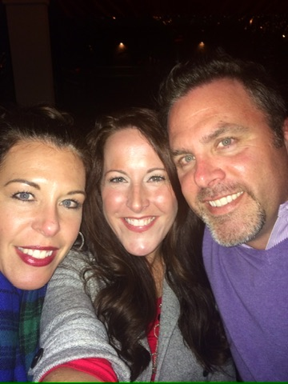
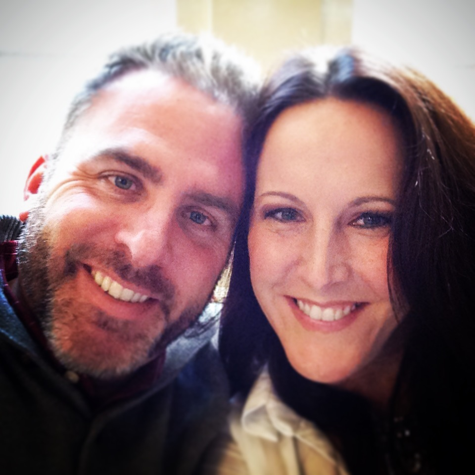
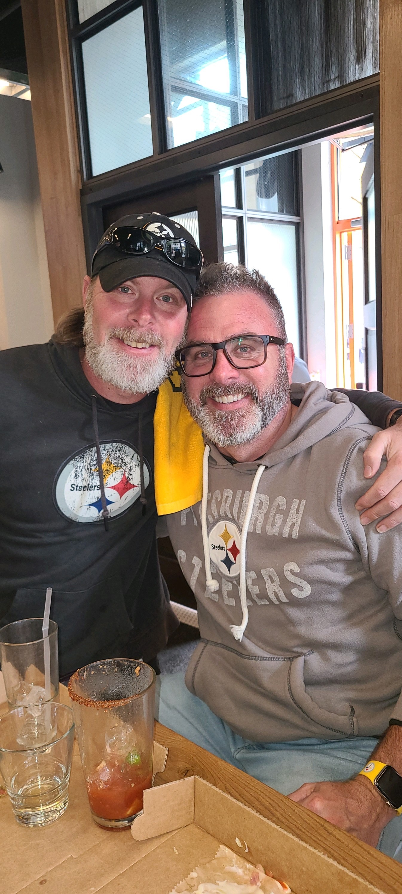
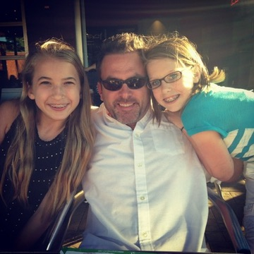
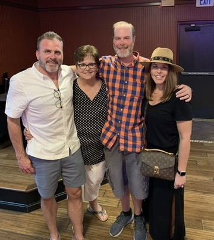
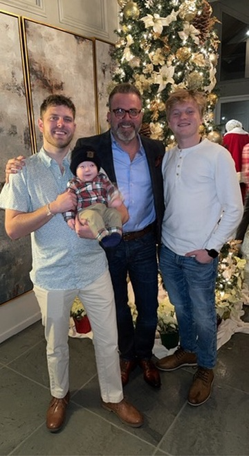
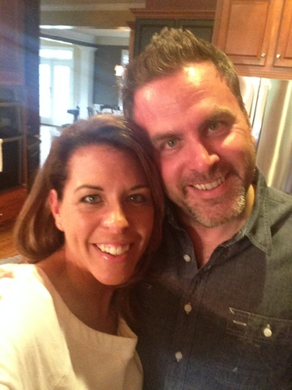
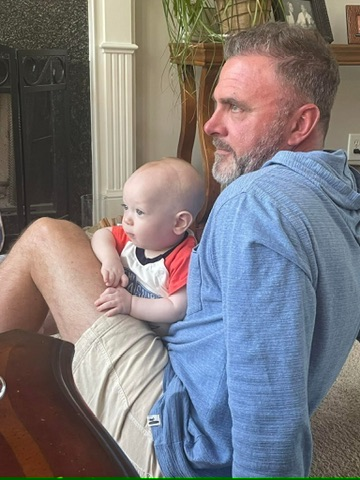
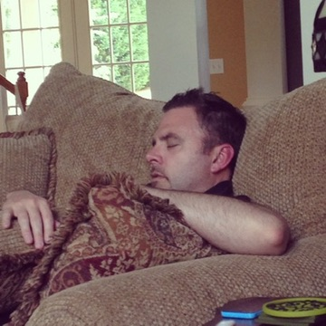

World Series Champions: Oakland Athletics
Super Bowl VII Champions: Miami Dolphins
NBA Champions: New York Knicks
Stanley Cup Champs: Montreal Canadiens
U.S. Open Golf Johnny Miller
U.S. Tennis: (Men/Ladies) John Newcombe/Margaret Smith Court
Wimbledon (Men/Women): Jan Kodes/Billie Jean King
NCAA Football Champions: Alabama & Notre Dame
NCAA Basketball Champions: UCLA
Kentucky Derby: Secretariat (Triple Crown Winner: Kentucky Derby, Preakness Stakes, and Belmont Stakes)
Record: 10 wins, 4 losses, 0 ties.
Coach: Chuck Noll.
Division Finish: 2nd in AFC Central.
Postseason: Lost Divisional Playoff 33-14 to the Oakland Raiders.
Points For/Against: 347 points scored (4th in AFC), 210 points allowed (8th in NFL).
December: The American Psychiatric Association removed homosexuality from its Diagnostic and Statistical Manual of Mental Disorders.
Top Song the Day you were Born: December 1 – December 14: Top Of The World – The Carpenters
1. All in the Family (CBS)
2. The Waltons (CBS)
3. Sanford and Son (NBC)
4. MASH (CBS)
5. Hawaii Five-O (CBS)
6. Maude (CBS)
7. Kojak (CBS)
8. The Sonny and Cher Comedy Hour (CBS)
9. The Mary Tyler Moore Show (CBS)
10. Cannon (CBS)
December: The American Psychiatric Association removed homosexuality from its Diagnostic and Statistical Manual of Mental Disorders.
Top Song the Day you were Born: December 1 – December 14: Top Of The World – The Carpenters
Jennifer, Amy, Michelle, Kimberly, Lisa, Michael, Chris, Topher, Jason, James, David
Adrienne Barbeau, Dyan Cannon, Veronica Carlson, Pam Grier, Dayle Haddon, Peggy Lipton, Maureen McCormick, Caroline Munro, Ingrid Pitt, Diana Ross, Maria Schneider, Barbra Streisand, Jane Seymour
Robert Redford, Paul Newman, Richard Roundtree, Marlon Brando
John Sirica
Terry Meeuwsen (De Pere, WI)
Amanda Jones (Illinois)
Science in Space: Anita and Arabella, two female cross spiders, went into orbit in 1973 for the Skylab 3 space station as part of an experiment to see if spiders could spin webs in near-weightlessness. They can.
The Top Song was Tie a Yellow Ribbon Round the Ole Oak Tree by Tony Orlando and Dawn
Influential Songs include: Walk on the Wild Side by Lou Reed, Knockin’ On Heaven’s Door by Bob Dylan, Cover of “Rolling Stone” by Dr Hook & The Medicine Show and Sing by The Carpenters
The Movies to Watch include The Sting, Charlotte’s Web, Paper Moon, Don’t Be Afraid of the Dark, Godspell, Enter the Dragon, The Exorcist, High Plains Drifter, Jesus Christ Superstar, Soylent Green, The Way We Were, The Sting and American Graffiti
The Most Famous Person in America was probably Elvis Presley
Notable books include Fear of Flying by Erica Jong and The Princess Bride by William Goldman
$200,000 ($1,100,000 in today’s dollars) was stolen from Led Zeppelin’s tour’s safety deposit box between the band’s second and third concerts in New York. The crime remains unsolved.
Garlic knots were invented in 1973 in Ozone Park, Queens. Several pizzerias began making them within days of each other.
Jimmy Carter reported a UFO sighting, calling it the “darndest thing I’ve ever seen.”
Price of metal ice cube tray in 1973: 91 cents
Raleigh Triumph bicycle: $97.95
The Funny Guys were Robert Klein and Albert Brooks
The Funny Late Night Host: Johnny Carson
The Funny Duo was Cheech and Chong
The Funny Lady was Carol Burnett
The Music Question: Who was Carly Simon singing about in You’re So Vain?
The Crazy Conspiracy: Did physically fit 32-year-old action star Bruce Lee die of natural causes?
Pink Floyd’s Dark Side of the Moon album was on the Billboard charts for 741 consecutive weeks from 1973 to 1988, and in total, has charted for 917 weeks.
Led Zeppelin bought their private jet, “The Starship,” for part of their 1973 US tour for $30,000. Drummer John Bonham once flew the band from New York to LA even though he didn’t have a pilot’s license.
KISS played their first show in 1973 in Queens, New York, for an audience of fewer than ten people and was paid $50 for that evening.
The Hampster Dance song (1998) is just a sped-up version of the song Whistle Stop from the animated Disney movie Robin Hood (1973).
Magnetic resonance imaging (MRI) was invented.
The public first used Air Bags in the Oldsmobile Toronado.
In 1973, Johnny Carson made a joke about a toilet paper shortage, causing people to hoard enough to cause an actual nationwide shortage.
An MIT computer in 1973 predicted society would collapse in 2040.
Two New York Yankees pitchers, Fritz Peterson and Mike Kekich, swapped wives and children; they announced the “change-up” at separate press conferences in 1973.
Dave Winfield, a former baseball player and Hall of Famer, was not only drafted by the MLB’s San Diego Padres in 1973 but also by an NBA team and an NFL team.
Basketball Hall of Famer Spencer Haywood was approached by Nike early in his career with an enticing offer: 100K or 10 % of Nike. He took the 100K. Today, the 10% is worth over 12.4 billion.
As of 2022, the NFL’s New York Jets have never beaten the Philadelphia Eagles. The first time they played was in 1973.
Cost of a Super Bowl ad in 1973: $88,000